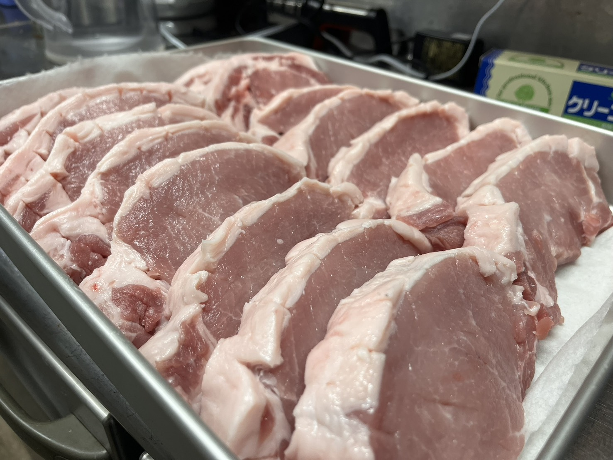
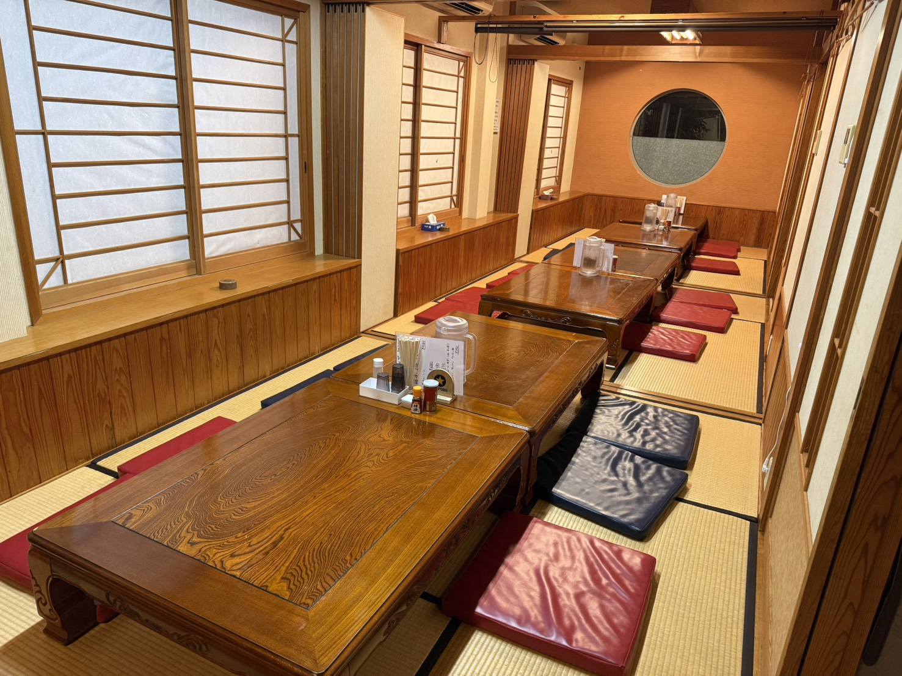

其の一
きなこ豚のこと
都城・はざま牧場で育てられた「きなこ豚」。臭みがなく、澄んだ甘みとしっかりとした旨みが特長。上質な素材の力を一皿に最大限に活かしています。
臭みのない肉厚を、低温でじっくり。
顎の弱い方にもやさしい、やわらかな一枚を、
串間の地から。

都城・はざま牧場で育てられた「きなこ豚」。臭みがなく、澄んだ甘みとしっかりとした旨みが特長。上質な素材の力を一皿に最大限に活かしています。
低温でじっくり揚げることで、旨みと肉汁を外に逃さずジューシーさと柔らかさを最大限に引き出します。肉本来のおいしさをそのままお届けするのがこだわりです。

慌ただしい日常から離れ、落ち着いた時間の中でとんかつをご堪能ください。ちょっと贅沢したいあの日に、ぜひお越しください。
地元・串間に根付いた食文化を大切に。地域の生産者と繋がりながら、日々の一皿に誇りを込めています。
※価格はすべて税込です。
揚げたての衣のサクサク感と肉汁をそのままで。
味の薄い順から。きなこ豚本来の甘みと旨みが際立ちます。
地元・串間産の刺身醤油をひとつけ。豚のうまみを引き立てます。
オリジナルソースで。ご飯との相性も最高。
やさしい旨みの中にとんかつの余韻が溶け合う上品な締めくくり。
お席のご予約はお電話、またはLINEから承ります。
まずはお気軽に。ご応募・ご質問はLINEからどうぞ。
LINEで応募する